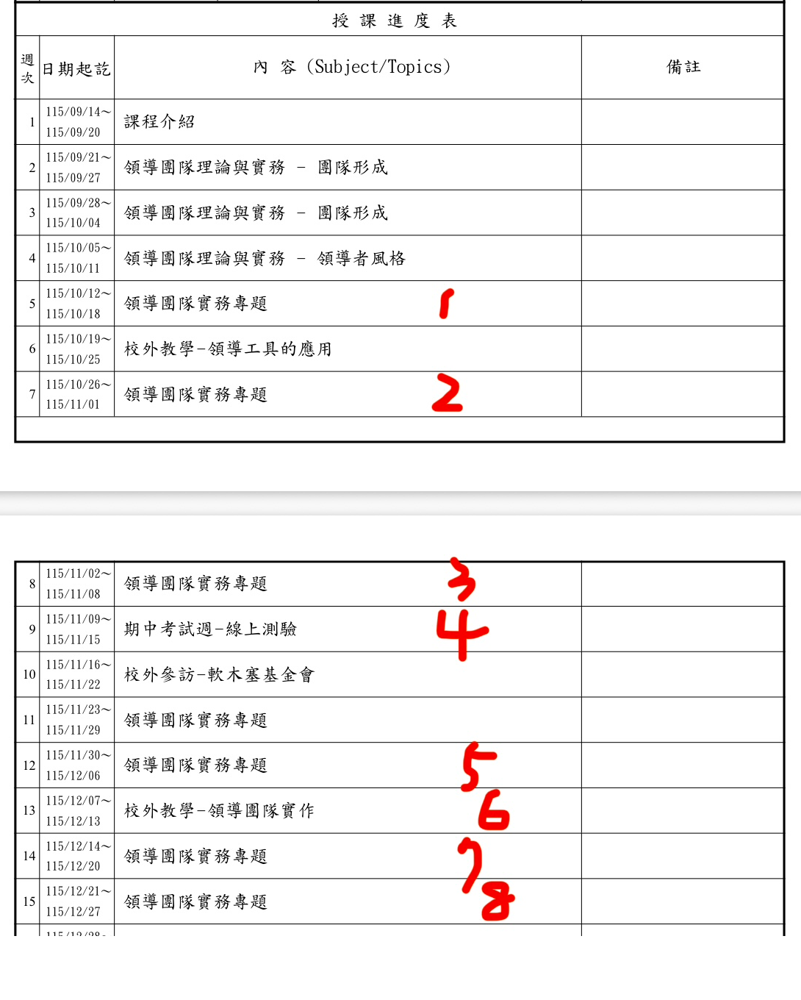

痛點：8 組搶 8 個日期
課堂上舉手記名字，一節課先沒了十分鐘。
發生什麼事
我的課堂有 8 組要上台報告，學期裡有 8 個可以報告的日期。以前的做法是我在課堂上問「誰要 10/14」，舉手、記名字、有人猶豫、有人搶，一節課過去十分鐘，下課後我還要把黑板上的名字抄進電腦。
這次我想改成：把一張表丟到 LINE 群，8 位組長自己去填，先填先贏，誰都不用登入什麼帳號。我心裡要的東西很簡單，左邊日期，右邊名字，就這樣。
我學到什麼
可複製的做法
我做了什麼：一張截圖，一句話
日期不是我算的。我只用手指在課表上寫了 1 到 8。
發生什麼事
我手上只有學校系統的課程進度表。我把它截圖下來，用手指在要報告的那幾週旁邊寫上 1 到 8，就這樣：

然後我打開手機上的 Claude，貼上這張截圖，講了上面那一句話。關鍵是那句「上課固定在星期三」，有了這句，AI 才知道要從每週的起訖日期裡挑出星期三。
我學到什麼
可複製的做法
AI 全自動做的七步
這七步我一步都沒碰，我只看到最後一行的連結。
發生什麼事
| 步驟 | AI 做了什麼 | 我看到什麼 |
|---|---|---|
| 1 | 看懂截圖：手寫 1 到 8 對應的是第 5、7、8、9、12、13、14、15 週 | 沒看到，它自己做 |
| 2 | 從每週的「日期起訖」算出那週的星期三：10/14、10/28、11/4、11/11、12/2、12/9、12/16、12/23 | 沒看到，它自己做 |
| 3 | 檢查它接得到我的 Google 雲端硬碟 | 沒看到，它自己做 |
| 4 | 在我的雲端硬碟建了一張叫「小組報告日期登記表」的試算表，8 個日期填好，下面附三條填表規則 | 沒看到，它自己做 |
| 5 | 把試算表讀回來，確認 8 個日期都在 | 沒看到，它自己做 |
| 6 | 把連結貼給我，附一段可以直接貼進 LINE 群的公告文字 | 一個可以點的連結，加一段公告 |
| 7 | 老實告訴我：「開放給別人編輯那一步我按不到，要妳自己按」 | 一句話交代清楚我要做什麼 |
第 5 步和第 7 步是我最在意的。第 5 步代表它不是「建完就說做好了」，是真的讀回來核對過。第 7 步代表它知道自己的邊界在哪，沒有跟我說「都好了」然後讓我發現組長打不開。
我學到什麼
可複製的做法
我必須自己按的那一步
誰能改我的檔案，要由我來決定，不是 AI。
發生什麼事
AI 建的檔案預設是「只有我看得到」。要讓組長能填，我要自己開權限。這不是 AI 做不到就算了，是本來就該由我按：開放「知道連結的人都能編輯」，等於任何拿到連結的人都能改，這個決定不該交給 AI。
- 點連結打開試算表，右上角按「共用」。
- 「一般存取權」從「限制」改成「知道連結的使用者」，右邊角色選「編輯者」。
- 按「複製連結」，把 AI 給的公告和這個連結一起貼進 LINE 群。
做完這三步，組長點連結就能直接打字，不用登入 Google 帳號。
我學到什麼
可複製的做法
開始前要準備的一件事
不是 AI 不會做，是它那個環境沒被允許碰你的檔案。
發生什麼事
要讓 AI 直接動到你的雲端硬碟，你要先在 Claude 裡把 Google 雲端硬碟接上：設定裡的「連接器」，選 Google Drive，登入一次授權。沒接的話，AI 只能「教你怎麼建」，不能「幫你建好」。
這是新手最常卡的一步。很多人以為 AI 不會做，其實是它在那個對話裡沒有被允許碰你的檔案。同一句話，接了連接器就是「建好了給你連結」，沒接就是「請照以下十個步驟操作」。
我學到什麼
可複製的做法
這個做法的邊界
人少才適合，連結一開放誰都能改，出錯有版本記錄可以救。
發生什麼事
- 人少才適合。8 個人靠大家看得到彼此填了什麼，就不會撞。幾十人以上要搶，再考慮會自動擋重複的工具，例如 Google 日曆的預約時段。
- 連結一開放，拿到的人都能改。課堂用可以，正式或機密資料不行。
- 有人手滑蓋掉別人的名字：打開試算表的「檔案」選「版本記錄」，看得到誰改的，一鍵還原。這是我敢開放編輯的底氣。
- 填完之後，把權限改回「檢視者」，避免之後被誤改。
我學到什麼
可複製的做法
我第一次其實講錯了
我說「幫我做一個 Google 表單」，AI 繞了六輪才回到試算表。
發生什麼事
上面那句一次到位的口令，是我繞完之後才整理出來的。我第一次講的是「幫我做一個 Google 表單」。AI 查了它手上的工具，發現接不到 Google 表單，於是給了我一段要自己去貼、自己執行的程式。我打不開那個檔案；我問能不能改用 LINE；我問還有什麼方法；我挑了 Google 日曆預約時段，它給我十四個步驟；我說「太麻煩不要了」，它才直接建了一張試算表，而那張表其實它第一輪就建得出來。
回頭看，問題出在我用了「Google 表單」這個工具名稱當需求的代稱。我真正要的是「一個大家都能填的東西」，AI 照字面去判斷工具可不可用，就往最複雜的路走了。講「試算表」加「給我連結」，它一次就到位。
我學到什麼
可複製的做法
給你的三步驟行動建議：明天就能開始
報名表、值日表、帶東西分工表、家長會時段登記，全部都是同一句話換名詞。
先把 Google 雲端硬碟接上
Claude 的設定裡找「連接器」，選 Google Drive，登入授權一次。只做一次，以後都有效。
找一張你正要手動做的登記表，改成講的
有原始資料就截圖給它，手寫標出你要的部分。口令照這句：「幫我建一張 Google 試算表，第一欄○○，第二欄姓名，放到我的雲端硬碟，建好讀回來確認一次，給我連結。」
拿到連結後，共用那一步自己按
右上「共用」，改「知道連結的使用者」加「編輯者」，複製連結貼進群組。填完記得改回「檢視者」。